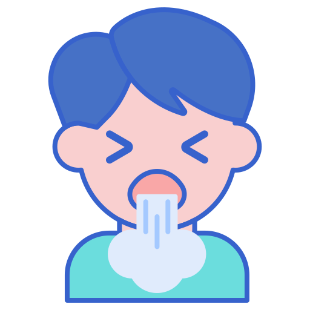

Coronavírus é uma família de vírus que causam infecções respiratórias. O novo agente do coronavírus foi descoberto em 31/12/19 após casos registrados na China. Provoca a doença chamada de coronavírus (COVID-19).
O virus é transmitido a partir de atividades muito recorrentes no cotidiano das pessoas, basicamente, qualquer atividade de contato social propicia a disseminação do virus, como por exemplo: Apertos de mão, contato com objetos infectados.